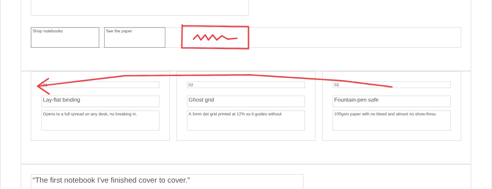

A Really Good Work Inc. project
Mark up your site on an iPad. A coding agent makes the change.
Draw on the live page, say what should change, and Claude Code edits the code on your Mac. You keep reviewing.
Small fixes still need a laptop.
You spot most problems on the real thing, often on a phone or iPad. The fix is usually small: a colour, a word, some spacing. But making it means opening the laptop, finding the file and switching context. So the fix waits, or gets lost.
Draw it, say it, it changes.
- 01Circle what you want changed. Apple Pencil on an iPad, or a finger on a phone.
- 02Say or type the change. “Make this our brand orange.”
- 03Your Mac gets the note, with the element, its text and its source file.
- 04Claude Code edits the file. The page reloads and the note turns green.
Built to stay out of the way.
You’re reviewing, not operating a tool. Nothing asks you to stop.
Voice, without paying for it.
Most voice features send your audio to a paid cloud service. This uses what’s already on your devices.
How it knows what you circled.
A page is a tree of boxes and the browser knows where each one sits. So the overlay doesn’t look at pixels. It asks the browser.
- 01Ask what’s under the middle of the circle. Usually a word inside a button.
- 02Step out to the parent while the circle still covers 70% of it. The word becomes the button.
- 03Stop when it doesn’t fit. The section is too big, so the button is the answer.
Then it collects what a developer would want: tag, classes, text, neighbours, a few styles and, in React, the component and source file.
How it tells an arrow from a circle.
Everyone draws differently, so it doesn’t recognise pictures. It measures each stroke with loose rules that hold up in anyone’s hand.
Then the shape becomes an instruction. An arrow moves whatever sits at its tail to where the tip points, a whole card rather than its heading. A box in empty space adds something between the two elements it sits between.
It shows its reading before you send, like “Add after Link ‘See the paper’”. For anything beyond a circle, the agent also gets a picture: the page as outlines with your ink on top.
 A · What you draw
A · What you draw
B · What the agent receivesThe middle step, on your own Mac.
One Node file, nothing to install beyond Node. It sits between the iPad and Claude Code.
[ann_c6j7hqC0Cmk] fix: Make this our brand orange page: / element: a.btn.btn-primary "Shop notebooks" source: src/components/PrimaryButton.tsx:12 classes: btn btn-primary
That’s the whole brief for one note: about 60 tokens. Notes, sketches and voice stay on your Mac. Claude Code works in your project the same way it does at your desk, with your own login. Nothing runs until you send.
Who gets to tell your computer to change code?
This lets a web page ask an agent to edit files on your Mac. Anyone who can reach the server could do the same. So only you can reach it, and the agent is limited even then.
Why Tailscale.
Your iPad needs to reach your Mac. Opening a port to the internet invites the world. Home Wi-Fi only works at home, and anyone on it can reach the port. Tailscale is a private network between your own devices: install it on both, sign in once, and they connect, encrypted, from any network. It also gives the Mac a real HTTPS certificate, which Safari needs before a page can use the mic. The free plan covers it.
Without it: on a trusted Wi-Fi, run with HOST=0.0.0.0 and your Mac’s local IP. Plain HTTP, no mic button, home only. Not on café or office networks.
Run the demo.
git clone https://github.com/reallygoodwork/pencil cd pencil npm run demo # open localhost:5173, tap the pen
A Mac with Node 20 and Claude Code. The demo edits a copy of a sample site. The README covers your own project. Get the code
Short answers.
What is Pencil Agent?
An open-source tool for reviewing websites on an iPad or phone. You circle part of the live page, say or type the change, and Claude Code edits the code on your Mac. The page reloads with the fix.
What do I need to run it?
A Mac with Node 20.6 or newer, Claude Code signed in, your app's dev server, and an iPad or iPhone. Tailscale (free) connects the two devices from any network.
How much does it cost?
Pencil Agent is free and MIT licensed. Claude Code runs with your own Claude plan or API key, the same as at your desk. Voice transcription is free: keyboard dictation or whisper.cpp on your Mac.
How does it know which element I circled?
It asks the browser, not the pixels. It finds what sits under the middle of the circle, then steps out to the parent while the circle still covers 70% of it. Circle a button, get the button.
How does it tell an arrow from a circle?
It measures each stroke with loose rules instead of recognising pictures. Ends that meet make a loop. A path that turns back from its farthest point is an arrow. Two crossing lines are an X. A flat line through text is a strike, just below it an underline.
Where does my data go?
Notes, sketches and voice stay on your Mac. The only thing that leaves is what Claude Code sends to Anthropic while it works in your project, under your own login, the same as at your desk. Nothing runs until you send a note.
Is it secure?
The server listens on 127.0.0.1 only, checks a long random token and your app's exact address on every request, and refuses every other site. The agent can read, search and edit files. It has no terminal and no internet.
Why Tailscale?
Your iPad needs to reach your Mac without opening a port to the internet. Tailscale is a private, encrypted network between your own devices, and it gives the Mac a real HTTPS certificate so Safari allows the mic. On trusted home Wi-Fi you can skip it.
Does it work on a phone?
Yes. Turn the pen on, draw with one finger and scroll with two. On an iPad, the Apple Pencil draws and your fingers keep scrolling.
Which frameworks does it support?
Any site your dev server runs: it's one script tag, added in development only. In React apps it also reports the component and source file.